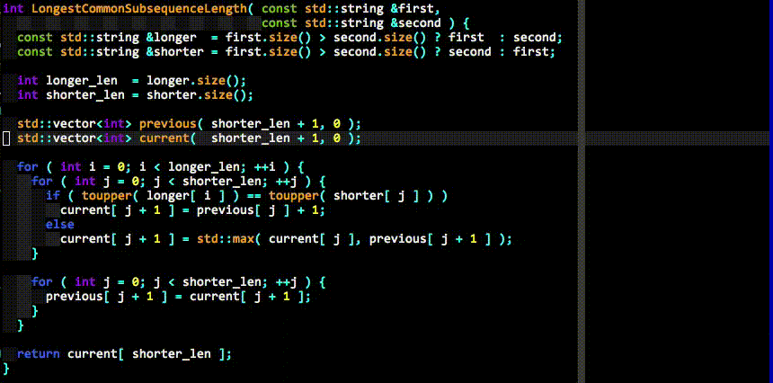

 <!DOCTYPE HTML>
<html>
<head><meta name="generator" content="Hexo 3.9.0">
  <!-- hexo-inject:begin --><!-- hexo-inject:end --><meta charset="UTF-8">
  
    <title>vim代码补全插件YouCompleteMe的安装和使用 | Zeco&#39;s blog</title>
    <meta name="baidu-site-verification" content="szo8xhfejr">
    <meta name="google-site-verification" content="_uVtfUmBEcmevomT5dpTdMBSAshmsJHV3gWBNTLX91I">
    <meta name="viewport" content="width=device-width, initial-scale=1,user-scalable=no">
    
    <meta name="author" content="Zeco">
    

    
    <meta name="description" content="本文将讲述我是如何安装使用vim的代码补全插件YouCompleteMe的。">
<meta name="keywords" content="vim,YouCompleteMe">
<meta property="og:type" content="article">
<meta property="og:title" content="vim代码补全插件YouCompleteMe的安装和使用">
<meta property="og:url" content="http://zeco.xyz/2018/11/30/install-ycm/index.html">
<meta property="og:site_name" content="Zeco&#39;s blog">
<meta property="og:description" content="本文将讲述我是如何安装使用vim的代码补全插件YouCompleteMe的。">
<meta property="og:locale" content="default">
<meta property="og:image" content="http://zeco.xyz/img/ycm.gif">
<meta property="og:updated_time" content="2019-08-22T15:54:14.000Z">
<meta name="twitter:card" content="summary">
<meta name="twitter:title" content="vim代码补全插件YouCompleteMe的安装和使用">
<meta name="twitter:description" content="本文将讲述我是如何安装使用vim的代码补全插件YouCompleteMe的。">
<meta name="twitter:image" content="http://zeco.xyz/img/ycm.gif">

    
    <link rel="alternative" href="/atom.xml" title="Zeco&#39;s blog" type="application/atom+xml">
    
    
    <link rel="icon" href="/img/favicon.ico">
    
    
    <link rel="apple-touch-icon" href="/img/Z.jpg">
    <link rel="apple-touch-icon-precomposed" href="/img/Z.jpg">
    
    <link rel="stylesheet" href="/css/style.css">
    <script>
  (function(i,s,o,g,r,a,m){i['GoogleAnalyticsObject']=r;i[r]=i[r]||function(){
  (i[r].q=i[r].q||[]).push(arguments)},i[r].l=1*new Date();a=s.createElement(o),
  m=s.getElementsByTagName(o)[0];a.async=1;a.src=g;m.parentNode.insertBefore(a,m)
  })(window,document,'script','https://www.google-analytics.com/analytics.js','ga');

  ga('create', 'UA-84289885-1', 'auto');
  ga('send', 'pageview');

</script>
<script>
(function(){
    var bp = document.createElement('script');
    var curProtocol = window.location.protocol.split(':')[0];
    if (curProtocol === 'https') {
        bp.src = 'https://zz.bdstatic.com/linksubmit/push.js';        
    }
    else {
        bp.src = 'http://push.zhanzhang.baidu.com/push.js';
    }
    var s = document.getElementsByTagName("script")[0];
    s.parentNode.insertBefore(bp, s);
})();
</script>
<script src="/js/jquery-2.0.3.min.js"></script><!-- hexo-inject:begin --><!-- hexo-inject:end -->

</head>
</html>
  <body>
    <!-- hexo-inject:begin --><!-- hexo-inject:end --><header>
      
<div>
		
			<div id="imglogo">
				<a href="/"></a>
			</div>
			
			<div id="textlogo">
				<h1 class="site-name"><a href="/" title="Zeco&#39;s blog">Zeco&#39;s blog</a></h1>
				<h2 class="blog-motto">I think, I code, I run</h2>
			</div>
			<div class="navbar"><a class="navbutton navmobile" href="#" title="Menu">
			</a></div>
			<nav class="animated">
				<ul>
					<ul>
					 
						<li><a href="/">Home</a></li>
					
						<li><a href="/archives">Archives</a></li>
					
						<li><a href="/about">About</a></li>
					
					<li>
 					
					<form class="search" action="//google.com/search" method="get" accept-charset="utf-8">
						<label>Search</label>
						<input type="search" id="search" name="q" autocomplete="off" maxlength="20" placeholder="Search" />
						<input type="hidden" name="q" value="site:zeco.xyz">
					</form>
					
					</li>
				</ul>
			</nav>			
</div>
    </header>
    <div id="container">
      <div id="main" class="post" itemscope itemprop="blogPost">
  

	<article itemprop="articleBody"> 
		<header class="article-info clearfix">
  <h1 itemprop="name">
    
      <a href="/2018/11/30/install-ycm/" title="vim代码补全插件YouCompleteMe的安装和使用" itemprop="url">vim代码补全插件YouCompleteMe的安装和使用</a>
  </h1>
  <p class="article-author">By
       
		<a href="/about" title="Zeco" target="_blank" itemprop="author">Zeco</a>
		
  <p class="article-time">
    <time datetime="2018-11-30T12:54:47.000Z" itemprop="datePublished"> Published 2018-11-30</time>
    
  </p>
</header>
		<p class="article-content">版权声明：本文章为博主原创，转载请注明出处。保留所有权利。</p>
	<div class="article-content">
		
		<div id="toc" class="toc-article">
			<strong class="toc-title">Contents</strong>
		
			<ol class="toc"><li class="toc-item toc-level-2"><a class="toc-link" href="#前言"><span class="toc-number">1.</span> <span class="toc-text">前言</span></a></li><li class="toc-item toc-level-2"><a class="toc-link" href="#准备"><span class="toc-number">2.</span> <span class="toc-text">准备</span></a></li><li class="toc-item toc-level-2"><a class="toc-link" href="#真正的安装"><span class="toc-number">3.</span> <span class="toc-text">真正的安装</span></a><ol class="toc-child"><li class="toc-item toc-level-3"><a class="toc-link" href="#坑1-Your-C-compiler-does-NOT-fully-support-C-11"><span class="toc-number">3.1.</span> <span class="toc-text">坑1 Your C++ compiler does NOT fully support C++11</span></a></li><li class="toc-item toc-level-3"><a class="toc-link" href="#坑2-The-ycmd-server-SHUT-DOWN-restart-with-ycmrestartserver-…"><span class="toc-number">3.2.</span> <span class="toc-text">坑2 The ycmd server SHUT DOWN (restart with ycmrestartserver)…</span></a></li><li class="toc-item toc-level-3"><a class="toc-link" href="#坑2-1-ycm-core-so-undifined-symbol-clang-parseTranslationUnit2FullArgv"><span class="toc-number">3.3.</span> <span class="toc-text">坑2.1 ycm_core.so: undifined symbol: clang_parseTranslationUnit2FullArgv</span></a></li><li class="toc-item toc-level-3"><a class="toc-link" href="#坑2-2-Import-Error-lib64-libc-so-6-version-‘GLIBC-2-15’-not-found"><span class="toc-number">3.4.</span> <span class="toc-text">坑2.2 Import Error: /lib64/libc.so.6: version ‘GLIBC_2.15’ not found</span></a></li><li class="toc-item toc-level-3"><a class="toc-link" href="#坑2-3-更新了gcc？"><span class="toc-number">3.5.</span> <span class="toc-text">坑2.3 更新了gcc？</span></a></li><li class="toc-item toc-level-3"><a class="toc-link" href="#坑3-No-ycm-extra-conf-py-detected-amp-amp-Attribute-Error-‘module’-object-has-no-attribute-‘FlagsForFile’"><span class="toc-number">3.6.</span> <span class="toc-text">坑3 No .ycm_extra_conf.py detected. &amp;&amp; Attribute Error: ‘module’ object has no attribute ‘FlagsForFile’</span></a></li></ol></li><li class="toc-item toc-level-2"><a class="toc-link" href="#配置"><span class="toc-number">4.</span> <span class="toc-text">配置</span></a></li></ol>
		
		</div>
		
		<p>本文将讲述我是如何安装使用vim的代码补全插件YouCompleteMe的。</p>
<a id="more"></a>
<ul>
<li><h2 id="前言"><a href="#前言" class="headerlink" title="前言"></a>前言</h2><p>以前总是在用各种IDE在写代码，其一个主要的优点就是通常具备了比较完善的代码补全功能。换到vim之后也是在这一点上很不习惯。为了更好的编辑体验和更高的输入效率，决定搞一个<a href="http://valloric.github.io/YouCompleteMe/" target="_blank" rel="noopener">YouCompleteMe</a>。<br>Ycm号称最强vim代码补全插件，对若干主流编程语言都有着比较好的支持，补全体验直追IDE。<br><br>但是其繁琐的安装过程劝退了不少vim新手，我也曾经是其中一员。</p>
</li>
<li><h2 id="准备"><a href="#准备" class="headerlink" title="准备"></a>准备</h2><p>ycm要求vim版本至少为7.4.1578，并且有Python2或3支持。官方推荐使用<a href="https://github.com/VundleVim/Vundle.vim#about" target="_blank" rel="noopener">Vundle</a>来进行ycm的“安装”，所以最好提前安装好Vundle插件管理器。<br>有了Vundle之后，只需在.vimrc文件中添加一行：</p>
<figure class="highlight plain"><table><tr><td class="gutter"><pre><span class="line">1</span><br></pre></td><td class="code"><pre><span class="line">Plugin &apos;Valloric/YouCompleteMe&apos;</span><br></pre></td></tr></table></figure>

</li>
</ul>
<p>然后在vim中运行<code>:PluginInstall</code>即可进行“安装”。这里安装加了引号的意思是 这一步执行完后ycm并没有被真正安装完成，仍需要后面的步骤进行真正的安装。</p>
<ul>
<li><h2 id="真正的安装"><a href="#真正的安装" class="headerlink" title="真正的安装"></a>真正的安装</h2><p>使用Vundle进行安装后，在<code>.vim/bundle</code>文件夹下应该已经有了ycm的文件夹，进入其中并运行<code>install.py</code>安装脚本。如果你需要C家族语言的补全，还需要在后面加上参数<code>--clang-completer</code>。如果能够一口气安装到底，那么恭喜你，起码安装这一步，你完美地避开了所有的坑。然而往往在这一步卡住了无数的英雄好汉。。。</p>
</li>
<li><h3 id="坑1-Your-C-compiler-does-NOT-fully-support-C-11"><a href="#坑1-Your-C-compiler-does-NOT-fully-support-C-11" class="headerlink" title="坑1 Your C++ compiler does NOT fully support C++11"></a>坑1 Your C++ compiler does NOT fully support C++11</h3><p>ycm是从源码编译安装的，其源码使用的是C++11，所以我们的编译器也必须完全支持C++11标准才能正常编译，否则在编译前的检查阶段就会fail掉。我最开始的编译器是gcc4.4.7，然而gcc至少也要4.8+才能支持C++11，所以升级gcc势在必行。gcc的升级安装在这里不多细讲，需要注意的是如果有root权限，可以比较方便地用包管理器进行升级，否则就要从源码开始自行配置、编译、安装，有需要的朋友可以参考<a href="https://blog.csdn.net/qq_20965753/article/details/64133013?utm_source=blogxgwz1" target="_blank" rel="noopener">这篇博客</a>。我这里直接升级到了gcc5.2，填上了这个坑。</p>
</li>
<li><h3 id="坑2-The-ycmd-server-SHUT-DOWN-restart-with-ycmrestartserver-…"><a href="#坑2-The-ycmd-server-SHUT-DOWN-restart-with-ycmrestartserver-…" class="headerlink" title="坑2 The ycmd server SHUT DOWN (restart with ycmrestartserver)…"></a>坑2 The ycmd server SHUT DOWN (restart with ycmrestartserver)…</h3><p>编译成功后打开vim，没准会遇到这个报错，错误的原因可能有多种，详见后面的几个坑</p>
</li>
<li><h3 id="坑2-1-ycm-core-so-undifined-symbol-clang-parseTranslationUnit2FullArgv"><a href="#坑2-1-ycm-core-so-undifined-symbol-clang-parseTranslationUnit2FullArgv" class="headerlink" title="坑2.1 ycm_core.so: undifined symbol: clang_parseTranslationUnit2FullArgv"></a>坑2.1 ycm_core.so: undifined symbol: clang_parseTranslationUnit2FullArgv</h3><p>ycm的C家族语言补全是基于<a href="http://clang.llvm.org/" target="_blank" rel="noopener">clang</a>的，报这个错误说明你的clang版本不够。ycm需要至少3.8版本的clang。虽然在运行安装脚本的时候可以使用参数<code>--system-libclang</code>来告诉ycm使用系统自带的clang，但是官方<strong>强烈</strong>不建议这么做，比较推荐的做法是在<a href="http://clang.llvm.org/" target="_blank" rel="noopener">这里</a>下载适合自己系统的clang预编译包，放进<code>.vim/bundle/YouCompleteMe/third_party/ycmd/clang_archieves</code>路径下，或者干脆不指定clang，这样安装脚本会自动下载最新的clang预编译包放在上述路径下。</p>
</li>
<li><h3 id="坑2-2-Import-Error-lib64-libc-so-6-version-‘GLIBC-2-15’-not-found"><a href="#坑2-2-Import-Error-lib64-libc-so-6-version-‘GLIBC-2-15’-not-found" class="headerlink" title="坑2.2 Import Error: /lib64/libc.so.6: version ‘GLIBC_2.15’ not found"></a>坑2.2 Import Error: /lib64/libc.so.6: version ‘GLIBC_2.15’ not found</h3><p>望文生义可知其意，无非就是找不到2.15版本的glibc。运行</p>
<figure class="highlight plain"><table><tr><td class="gutter"><pre><span class="line">1</span><br></pre></td><td class="code"><pre><span class="line">strings /lib64/libc.so.6 | grep GLIBC</span><br></pre></td></tr></table></figure>

</li>
</ul>
<p>来查看当前系统支持的GLIBC版本，发现我的系统最多只支持到2.12，自然没法找到2.15的版本。虽然这个错误是由glibc的版本比较低引起的，但是在这里非常非常不建议通过更新glibc的版本来填这个坑，原因在于glibc是linux系统比较底层的c++运行库，很多基本的系统命令都依赖这个库，更新时如果操作不当很有可能导致这些命令都没法使用，比较难修理。<br>那么除此之外还有什么办法呢？上面也说了，ycm是基于clang来做C家族语言的补全的，而实际上这里调用glibc 2.15也是clang的需求，如果你的系统比较旧，那么下载的clang预编译包的所依赖的glibc很有可能版本高于你系统中的glibc，导致你掉入这个坑中，那么实际上我们只需要不使用clang的预编译包，而是从源码编译clang的话，就不会产生依赖更高版本clang的情况了。<br>从源码编译安装clang的过程不在这里细讲，需要注意的是clang是llvm这个库的一部分，所以实际上你需要从源码编译安装llvm。编译安装完成后，找到安装目录下的<code>lib/libclang.so</code>并用它替换<code>.vim/bundle/YouCompleteMe/third_party/ycmd/</code>下的对应文件就可以了。</p>
<ul>
<li><h3 id="坑2-3-更新了gcc？"><a href="#坑2-3-更新了gcc？" class="headerlink" title="坑2.3 更新了gcc？"></a>坑2.3 更新了gcc？</h3><p>业务要求将gcc升级至4.8，更新并更换了默认gcc为高版本后，启动vim时ycm再次报了The ycmd server SHUT DOWN。解决办法是重新执行ycm目录下的<code>setup.py</code></p>
</li>
<li><h3 id="坑3-No-ycm-extra-conf-py-detected-amp-amp-Attribute-Error-‘module’-object-has-no-attribute-‘FlagsForFile’"><a href="#坑3-No-ycm-extra-conf-py-detected-amp-amp-Attribute-Error-‘module’-object-has-no-attribute-‘FlagsForFile’" class="headerlink" title="坑3 No .ycm_extra_conf.py detected. &amp;&amp; Attribute Error: ‘module’ object has no attribute ‘FlagsForFile’"></a>坑3 No .ycm_extra_conf.py detected. &amp;&amp; Attribute Error: ‘module’ object has no attribute ‘FlagsForFile’</h3><p>这个其实不算坑，而是安装完成之后对C++补全没有进行配置或者配置不完善的问题。<code>ycm_extra_conf.py</code>实际上是ycm的一个配置文件，在<code>.vim/bundle/YouCompleteMe/third_party/ycmd/</code>路径下。如果不希望使用默认的配置文件，则可以在vimrc里面手动指定（见后）。一般来说我们需要修改的就是该文件中的flags变量，主要是把自己的工程目录添加进去，以便ycm可以识别其中的头文件。如果报Attribute Error，就在文件最后加上下面这段代码：</p>
<figure class="highlight plain"><table><tr><td class="gutter"><pre><span class="line">1</span><br><span class="line">2</span><br></pre></td><td class="code"><pre><span class="line">def FlagsForFiles(filename):</span><br><span class="line">    return &#123;&apos;flags&apos;: flags&#125;</span><br></pre></td></tr></table></figure>
</li>
<li><h2 id="配置"><a href="#配置" class="headerlink" title="配置"></a>配置</h2><p>这里单指在vimrc中的配置。一些常用的配置如下：</p>
<figure class="highlight plain"><table><tr><td class="gutter"><pre><span class="line">1</span><br><span class="line">2</span><br><span class="line">3</span><br><span class="line">4</span><br><span class="line">5</span><br><span class="line">6</span><br><span class="line">7</span><br><span class="line">8</span><br><span class="line">9</span><br><span class="line">10</span><br><span class="line">11</span><br><span class="line">12</span><br><span class="line">13</span><br><span class="line">14</span><br><span class="line">15</span><br><span class="line">16</span><br><span class="line">17</span><br><span class="line">18</span><br><span class="line">19</span><br><span class="line">20</span><br><span class="line">21</span><br><span class="line">22</span><br><span class="line">23</span><br><span class="line">24</span><br><span class="line">25</span><br><span class="line">26</span><br><span class="line">27</span><br><span class="line">28</span><br><span class="line">29</span><br><span class="line">30</span><br><span class="line">31</span><br><span class="line">32</span><br><span class="line">33</span><br><span class="line">34</span><br><span class="line">35</span><br><span class="line">36</span><br><span class="line">37</span><br><span class="line">38</span><br><span class="line">39</span><br><span class="line">40</span><br><span class="line">41</span><br><span class="line">42</span><br><span class="line">43</span><br><span class="line">44</span><br></pre></td><td class="code"><pre><span class="line">Plugin &apos;Valloric/YouCompleteMe&apos;</span><br><span class="line"></span><br><span class="line"># 手动设定全局C++补全配置文件</span><br><span class="line">let g:ycm_global_ycm_extra_conf = &apos;/home/zc/.vim/bundle/YouCompleteMe/.ycm_extra_conf.py&apos;</span><br><span class="line"></span><br><span class="line">let g:ycm_seed_identifiers_with_syntax = 1</span><br><span class="line"></span><br><span class="line"># 设置语义补全触发器，这里设置为只要输入两个字符就触发</span><br><span class="line">let g:ycm_semantic_triggers =  &#123;</span><br><span class="line">                        \ &apos;c,cpp,python,java,go,erlang,perl&apos;: [&apos;re!\w&#123;2&#125;&apos;],</span><br><span class="line">                        \ &apos;cs,lua,javascript&apos;: [&apos;re!\w&#123;2&#125;&apos;],</span><br><span class="line">                        \ &#125;</span><br><span class="line"></span><br><span class="line">#禁止ycm打开函数原型预览窗口</span><br><span class="line">set completeopt=menu,menuone</span><br><span class="line">let g:ycm_add_preview_to_completeopt = 0</span><br><span class="line"></span><br><span class="line"># 文件类型白名单，只有打开这里面的文件类型时才启用ycm的补全，防止打开一些比较大的非代码文件时ycm卡住</span><br><span class="line">let g:ycm_filetype_whitelist = &#123;</span><br><span class="line">                        \ &quot;c&quot;:1,</span><br><span class="line">                        \ &quot;cpp&quot;:1,</span><br><span class="line">                        \ &quot;objc&quot;:1,</span><br><span class="line">                        \ &quot;sh&quot;:1,</span><br><span class="line">                        \ &quot;zsh&quot;:1,</span><br><span class="line">                        \ &quot;zimbu&quot;:1,</span><br><span class="line">                        \ &quot;py&quot;:1,</span><br><span class="line">                        \ &quot;java&quot;:1,</span><br><span class="line">                        \ &quot;conf&quot;:1</span><br><span class="line">                        \ &#125;</span><br><span class="line"></span><br><span class="line"># 补全完成后自动关闭预览窗口</span><br><span class="line">let g:ycm_autoclose_preview_window_after_completion = 1</span><br><span class="line"></span><br><span class="line"># 切换到非输入模式自动关闭补全窗口</span><br><span class="line">autocmd InsertLeave * if pumvisible() == 0|pclose|endif</span><br><span class="line"></span><br><span class="line"># 禁止补全时打开预览窗口</span><br><span class="line">set completeopt-=previe</span><br><span class="line"></span><br><span class="line"># 禁止ycm显示语法诊断信息，因为我用了syntastic插件来检查语法</span><br><span class="line">let g:ycm_show_diagnostics_ui = 0</span><br><span class="line"></span><br><span class="line"># 设置回车为补全确认键</span><br><span class="line">let g:ycm_key_list_stop_completion = [&apos;&lt;CR&gt;&apos;]</span><br></pre></td></tr></table></figure>

</li>
</ul>
 
	</div>
	<p><a href="javascript:void(0)" onclick="dashangToggle()" class="dashang" style = "color:#fff;" title="打赏，支持一下">打赏</a></p>
<div class="hide_box"></div>
<div class="shang_box">
	<a class="shang_close" href="javascript:void(0)" onclick="dashangToggle()" title="关闭"></a>
	
	<div class="shang_payimg">
		
	</div>
		
	<div class="shang_payselect">
		<div class="pay_item checked" data-id="alipay">
			<span class="radiobox"></span>
			<span class="pay_logo"></span>
		</div>
		<div class="pay_item" data-id="weipay">
			<span class="radiobox"></span>
			<span class="pay_logo"></span>
		</div>
	</div>
	<div class="shang_info">
		<p>你的支持是对我最好的鼓励</p>
	</div>
</div>
		<footer class="article-footer clearfix">
<div class="article-catetags">


  <div class="article-tags">
  
  <span></span> <a href="/tags/vim/">vim</a><a href="/tags/YouCompleteMe/">YouCompleteMe</a>
  </div>


</div>


	<div class="article-share" id="share">
	
	  <div data-url="http://zeco.xyz/2018/11/30/install-ycm/" data-title="vim代码补全插件YouCompleteMe的安装和使用 | Zeco&#39;s blog" data-tsina="3723073453" class="share clearfix">
	  </div>
	
	</div>


</footer>

   	       
	</article>
	<style type="text/css">
	
	.hide_box{z-index:999;filter:alpha(opacity=50);background:#666;opacity: 0.5;-moz-opacity: 0.5;left:0;top:0;height:99%;width:100%;position:fixed;display:none;}
	.shang_box{width:540px;height:300px;padding:30px;background-color:#fff;border-radius:10px;position:fixed;z-index:1000;left:50%;top:50%;margin-left:-280px;margin-top:-280px;border:1px dotted #dedede;display:none;}
	.shang_box img{border:none;border-width:0;}
	.dashang{display:block;width:100px;margin:0px auto 25px auto;height:25px;line-height:25px;padding:10px;background-color:#E74851;text-align:center;text-decoration:none;border-radius:10px;font-weight:bold;font-size:16px;transition: all 0.1s;}
	.dashang:hover{padding:15px;font-size:18px;}
	.shang_close{float:right;display:inline-block;}
	.shang_logo{display:block;text-align:center;margin:20px auto;}
	.shang_tit{width: 100%;height: 75px;text-align: center;line-height: 66px;color: #a3a3a3;font-size: 16px;background: url('../../../../img/cy-reward-title-bg.jpg');font-family: 'Microsoft YaHei';margin-top: 7px;margin-right:2px;}
	.shang_tit p{color:#a3a3a3;text-align:center;font-size:16px;}
	.shang_payimg{width:140px;padding:10px;border:6px solid #EA5F00;margin:0 auto;border-radius:3px;height:140px;}
	.shang_payimg img{display:block;text-align:center;width:140px;height:140px; }
	.pay_explain{text-align:center;margin:10px auto;font-size:12px;color:#545454;}
	.radiobox{width: 16px;height: 16px;background: url('../../../../img/radio2.jpg');display: block;float: left;margin-top: 5px;margin-right: 14px;}
	.checked .radiobox{background:url('../../../../img/radio1.jpg');}
	.shang_payselect{text-align:center;margin:0 auto;margin-top:40px;cursor:pointer;height:60px;width:280px;}
	.shang_payselect .pay_item{display:inline-block;margin-right:10px;float:left;}
	.shang_info{clear:both;}
	.shang_info p,.shang_info a{color:#C3C3C3;text-align:center;font-size:12px;text-decoration:none;line-height:2em;}
</style>

<script type="text/javascript">
$(function(){
	$(".pay_item").click(function(){
		$(this).addClass('checked').siblings('.pay_item').removeClass('checked');
		var dataid=$(this).attr('data-id');
		$(".shang_payimg img").attr("src","../../../../img/"+dataid+"img.jpg");
		$("#shang_pay_txt").text(dataid=="alipay"?"支付宝":"微信");
	});
});
function dashangToggle(){
	$(".hide_box").fadeToggle();
	$(".shang_box").fadeToggle();
}
</script>

	
<nav class="article-nav clearfix">
 
 <div class="prev" >
 <a href="/2019/01/21/sazabi/" title="RG 沙扎比渣新素组">
  <strong>上一篇：</strong><br/>
  <span>
  RG 沙扎比渣新素组</span>
</a>
</div>


<div class="next">
<a href="/2018/03/21/Leetcode-532/"  title="Leetcode-532 K-diff Pairs in an Array">
 <strong>下一篇：</strong><br/> 
 <span>Leetcode-532 K-diff Pairs in an Array
</span>
</a>
</div>

</nav>

	

<section id="comments" class="comment">
  <div id="disqus_thread">
    <noscript>Please enable JavaScript to view the <a href="//disqus.com/?ref_noscript">comments powered by Disqus.</a></noscript>
  </div>
</section>

</div>  
      

  <div id="toc" class="toc-aside">
  <strong class="toc-title">Contents</strong>
 
 <ol class="toc"><li class="toc-item toc-level-2"><a class="toc-link" href="#前言"><span class="toc-number">1.</span> <span class="toc-text">前言</span></a></li><li class="toc-item toc-level-2"><a class="toc-link" href="#准备"><span class="toc-number">2.</span> <span class="toc-text">准备</span></a></li><li class="toc-item toc-level-2"><a class="toc-link" href="#真正的安装"><span class="toc-number">3.</span> <span class="toc-text">真正的安装</span></a><ol class="toc-child"><li class="toc-item toc-level-3"><a class="toc-link" href="#坑1-Your-C-compiler-does-NOT-fully-support-C-11"><span class="toc-number">3.1.</span> <span class="toc-text">坑1 Your C++ compiler does NOT fully support C++11</span></a></li><li class="toc-item toc-level-3"><a class="toc-link" href="#坑2-The-ycmd-server-SHUT-DOWN-restart-with-ycmrestartserver-…"><span class="toc-number">3.2.</span> <span class="toc-text">坑2 The ycmd server SHUT DOWN (restart with ycmrestartserver)…</span></a></li><li class="toc-item toc-level-3"><a class="toc-link" href="#坑2-1-ycm-core-so-undifined-symbol-clang-parseTranslationUnit2FullArgv"><span class="toc-number">3.3.</span> <span class="toc-text">坑2.1 ycm_core.so: undifined symbol: clang_parseTranslationUnit2FullArgv</span></a></li><li class="toc-item toc-level-3"><a class="toc-link" href="#坑2-2-Import-Error-lib64-libc-so-6-version-‘GLIBC-2-15’-not-found"><span class="toc-number">3.4.</span> <span class="toc-text">坑2.2 Import Error: /lib64/libc.so.6: version ‘GLIBC_2.15’ not found</span></a></li><li class="toc-item toc-level-3"><a class="toc-link" href="#坑2-3-更新了gcc？"><span class="toc-number">3.5.</span> <span class="toc-text">坑2.3 更新了gcc？</span></a></li><li class="toc-item toc-level-3"><a class="toc-link" href="#坑3-No-ycm-extra-conf-py-detected-amp-amp-Attribute-Error-‘module’-object-has-no-attribute-‘FlagsForFile’"><span class="toc-number">3.6.</span> <span class="toc-text">坑3 No .ycm_extra_conf.py detected. &amp;&amp; Attribute Error: ‘module’ object has no attribute ‘FlagsForFile’</span></a></li></ol></li><li class="toc-item toc-level-2"><a class="toc-link" href="#配置"><span class="toc-number">4.</span> <span class="toc-text">配置</span></a></li></ol>
 
  </div>

<div id="asidepart">

<aside class="clearfix">

  
<div class="github-card">
<p class="asidetitle">Recent visits</p>
<div  data-width="220" data-height="119" >
<script type="text/javascript" src="//ri.revolvermaps.com/0/0/6.js?i=8owlka2481a&amp;m=2&amp;s=220&amp;c=ffc000&amp;cr1=ff0000&amp;f=trebuchet_ms&amp;l=0" async="async"></script>
</div>

  </div>


  

  <script src="/js/jquery-2.0.3.min.js"></script>
<script src="/js/jquery.svg3dtagcloud.min.js"></script>


<div>
	<p class="asidetitle">Tags</p>
		<div id="mytagcloud" style="margin-top:10px">
		
		
			
				<a href="/tags/Leetcode/" style="display:none" title="Leetcode">Leetcode</a>
			
		
			
				<a href="/tags/算法/" style="display:none" title="算法">算法</a>
			
		
			
				<a href="/tags/python/" style="display:none" title="python">python</a>
			
		
			
				<a href="/tags/C/" style="display:none" title="C#">C#</a>
			
		
			
				<a href="/tags/C-C/" style="display:none" title="C/C++">C/C++</a>
			
		
			
				<a href="/tags/NLP/" style="display:none" title="NLP">NLP</a>
			
		
			
				<a href="/tags/NLPCC评测/" style="display:none" title="NLPCC评测">NLPCC评测</a>
			
		
			
				<a href="/tags/pyhon/" style="display:none" title="pyhon">pyhon</a>
			
		
			
				<a href="/tags/django/" style="display:none" title="django">django</a>
			
		
			
				<a href="/tags/阿里云/" style="display:none" title="阿里云">阿里云</a>
			
		
			
				<a href="/tags/输入法/" style="display:none" title="输入法">输入法</a>
			
		
			
				<a href="/tags/vim/" style="display:none" title="vim">vim</a>
			
		
			
				<a href="/tags/YouCompleteMe/" style="display:none" title="YouCompleteMe">YouCompleteMe</a>
			
		
			
				<a href="/tags/非技术/" style="display:none" title="非技术">非技术</a>
			
		
			
				<a href="/tags/Gunpla/" style="display:none" title="Gunpla">Gunpla</a>
			
		
			
				<a href="/tags/pyyaml/" style="display:none" title="pyyaml">pyyaml</a>
			
		
			
				<a href="/tags/安装/" style="display:none" title="安装">安装</a>
			
		
			
				<a href="/tags/shell/" style="display:none" title="shell">shell</a>
			
		
			
				<a href="/tags/unicode/" style="display:none" title="unicode">unicode</a>
			
		
			
				<a href="/tags/编码/" style="display:none" title="编码">编码</a>
			
		
		</ul>
		</div>
</div>
<script src="/js/my-tag-cloud.js"></script>


  <div class="linkslist">
  <p class="asidetitle">Links</p>
    <ul>
        
          <li>
            
            	<a href="http://ateki.me" target="_blank" title=" 非典型程序员">Ateki</a>
            
          </li>
        
          <li>
            
            	<a href="https://zehualee.github.io/" target="_blank" title=" 李大裤衩">LeeZehua</a>
            
          </li>
        
          <li>
            
            	<a href="http://xls1994.github.io/" target="_blank" title=" 屌，实在是屌，不过是傻屌的屌">YangYunlong</a>
            
          </li>
        
          <li>
            
            	<a href="http://www.ppg.wiki/" target="_blank" title=" P出你的世界！">PPG</a>
            
          </li>
        
    </ul>
</div>

</aside>
</div>
    </div>
    <footer><div id="footer" >
	
	<div class="line">
		<span></span>
		<div class="author"></div>
	</div>
	
	
	<section class="info">
		<p> Hello ,I&#39;m Zeco in Baidu. <br/>
			This is my blog.</p>
	</section>
	 
	<div class="social-font" class="clearfix">
		
		<a href="http://weibo.com/3723073453" target="_blank" class="icon-weibo" title="微博"></a>
		
		
		<a href="https://github.com/Zeco-01" target="_blank" class="icon-github" title="github"></a>
		
		
		
		
		
		
		
		<a href="http://www.zhihu.com/people/zhang-cong-87-37" target="_blank" class="icon-zhihu" title="知乎"></a>
		
		
		
		<a href="mailto:zhangcong002@gmail.com" target="_blank" class="icon-email" title="Email Me"></a>
		
	</div>
			
		

		<p class="copyright">
		Powered by <a href="http://hexo.io" target="_blank" title="hexo">hexo</a> and Theme by <a href="https://github.com/wuchong/jacman" target="_blank" title="Jacman">Jacman</a> © 2019 
		
		<a href="/about" target="_blank" title="Zeco">Zeco</a>
		
		
		</p>
</div>
</footer>
    <script src="/js/jquery-2.0.3.min.js"></script>
<script src="/js/jquery.imagesloaded.min.js"></script>
<script src="/js/gallery.js"></script>
<script src="/js/jquery.qrcode-0.12.0.min.js"></script>

<script type="text/javascript">
$(document).ready(function(){ 
  $('.navbar').click(function(){
    $('header nav').toggleClass('shownav');
  });
  var myWidth = 0;
  function getSize(){
    if( typeof( window.innerWidth ) == 'number' ) {
      myWidth = window.innerWidth;
    } else if( document.documentElement && document.documentElement.clientWidth) {
      myWidth = document.documentElement.clientWidth;
    };
  };
  var m = $('#main'),
      a = $('#asidepart'),
      c = $('.closeaside'),
      o = $('.openaside');
  c.click(function(){
    a.addClass('fadeOut').css('display', 'none');
    o.css('display', 'block').addClass('fadeIn');
    m.addClass('moveMain');
  });
  o.click(function(){
    o.css('display', 'none').removeClass('beforeFadeIn');
    a.css('display', 'block').removeClass('fadeOut').addClass('fadeIn');      
    m.removeClass('moveMain');
  });
  $(window).scroll(function(){
    o.css("top",Math.max(80,260-$(this).scrollTop()));
  });
  
  $(window).resize(function(){
    getSize(); 
    if (myWidth >= 1024) {
      $('header nav').removeClass('shownav');
    }else{
      m.removeClass('moveMain');
      a.css('display', 'block').removeClass('fadeOut');
      o.css('display', 'none');
      
      $('#toc.toc-aside').css('display', 'none');
        
    }
  });
});
</script>

<script type="text/javascript">
$(document).ready(function(){ 
  var ai = $('.article-content>iframe'),
      ae = $('.article-content>embed'),
      t  = $('#toc'),
      ta = $('#toc.toc-aside'),
      o  = $('.openaside'),
      c  = $('.closeaside');
  if(ai.length>0){
    ai.wrap('<div class="video-container" />');
  };
  if(ae.length>0){
   ae.wrap('<div class="video-container" />');
  };
  c.click(function(){
    ta.css('display', 'block').addClass('fadeIn');
  });
  o.click(function(){
    ta.css('display', 'none');
  });
  $(window).scroll(function(){
    ta.css("top",Math.max(140,320-$(this).scrollTop()));
  });
});
</script>


<script type="text/javascript">
$(document).ready(function(){ 
  var $this = $('.share'),
      url = $this.attr('data-url'),
      encodedUrl = encodeURIComponent(url),
      title = $this.attr('data-title'),
      tsina = $this.attr('data-tsina'),
      description = $this.attr('description');
  var html = [
  '<div class="hoverqrcode clearfix"></div>',
  '<a class="overlay" id="qrcode"></a>',
  '<a href="https://www.facebook.com/sharer.php?u=' + encodedUrl + '" class="article-share-facebook" target="_blank" title="Facebook"></a>',
  '<a href="https://twitter.com/intent/tweet?url=' + encodedUrl + '" class="article-share-twitter" target="_blank" title="Twitter"></a>',
  '<a href="#qrcode" class="article-share-qrcode" title="微信"></a>',
  '<a href="http://widget.renren.com/dialog/share?resourceUrl=' + encodedUrl + '&srcUrl=' + encodedUrl + '&title=' + title +'" class="article-share-renren" target="_blank" title="人人"></a>',
  '<a href="http://service.weibo.com/share/share.php?title='+title+'&url='+encodedUrl +'&ralateUid='+ tsina +'&searchPic=true&style=number' +'" class="article-share-weibo" target="_blank" title="微博"></a>',
  '<span title="Share to"></span>'
  ].join('');
  $this.append(html);

  $('.hoverqrcode').hide();

  var myWidth = 0;
  function updatehoverqrcode(){
    if( typeof( window.innerWidth ) == 'number' ) {
      myWidth = window.innerWidth;
    } else if( document.documentElement && document.documentElement.clientWidth) {
      myWidth = document.documentElement.clientWidth;
    };
    var qrsize = myWidth > 1024 ? 200:100;
    var options = {render: 'image', size: qrsize, fill: '#2ca6cb', text: url, radius: 0.5, quiet: 1};
    var p = $('.article-share-qrcode').position();
    $('.hoverqrcode').empty().css('width', qrsize).css('height', qrsize)
                          .css('left', p.left-qrsize/2+20).css('top', p.top-qrsize-10)
                          .qrcode(options);
  };
  $(window).resize(function(){
    $('.hoverqrcode').hide();
  });
  $('.article-share-qrcode').click(function(){
    updatehoverqrcode();
    $('.hoverqrcode').toggle();
  });
  $('.article-share-qrcode').hover(function(){}, function(){
      $('.hoverqrcode').hide();
  });
});   
</script>


<script type="text/javascript">

var disqus_shortname = 'zeco-blog';

(function(){
  var dsq = document.createElement('script');
  dsq.type = 'text/javascript';
  dsq.async = true;
  dsq.src = '//' + disqus_shortname + '.disqus.com/embed.js';
  (document.getElementsByTagName('head')[0] || document.getElementsByTagName('body')[0]).appendChild(dsq);
}());
(function(){
  var dsq = document.createElement('script');
  dsq.type = 'text/javascript';
  dsq.async = true;
  dsq.src = '//' + disqus_shortname + '.disqus.com/count.js';
  (document.getElementsByTagName('head')[0] || document.getElementsByTagName('body')[0]).appendChild(dsq);
}());
</script>


<link rel="stylesheet" href="/fancybox/jquery.fancybox.css" media="screen" type="text/css">
<script src="/fancybox/jquery.fancybox.pack.js"></script>
<script type="text/javascript">
$(document).ready(function(){ 
  $('.article-content').each(function(i){
    $(this).find('img').each(function(){
      if ($(this).parent().hasClass('fancybox')) return;
      var alt = this.alt;
      if (alt) $(this).after('<span class="caption">' + alt + '</span>');
      $(this).wrap('<a href="' + this.src + '" title="' + alt + '" class="fancybox"></a>');
    });
    $(this).find('.fancybox').each(function(){
      $(this).attr('rel', 'article' + i);
    });
  });
  if($.fancybox){
    $('.fancybox').fancybox();
  }
}); 
</script>


<!-- Analytics Begin -->


<!-- Analytics End -->

<!-- Totop Begin -->

	<div id="totop">
	<a title="Back to Top"></a>
	</div>
	<script src="/js/totop.js"></script>

<!-- Totop End -->

<!-- MathJax Begin -->
<!-- mathjax config similar to math.stackexchange -->

<script type="text/x-mathjax-config">
  MathJax.Hub.Config({
    tex2jax: {
      inlineMath: [ ['$','$'], ["\\(","\\)"] ],
      processEscapes: true
    }
  });
</script>

<script type="text/x-mathjax-config">
    MathJax.Hub.Config({
      tex2jax: {
        skipTags: ['script', 'noscript', 'style', 'textarea', 'pre', 'code']
      }
    });
</script>

<script type="text/x-mathjax-config">
    MathJax.Hub.Queue(function() {
        var all = MathJax.Hub.getAllJax(), i;
        for(i=0; i < all.length; i += 1) {
            all[i].SourceElement().parentNode.className += ' has-jax';
        }
    });
</script>

<script type="text/javascript" src="http://cdn.mathjax.org/mathjax/latest/MathJax.js?config=TeX-AMS-MML_HTMLorMML">
</script>


<!-- MathJax End -->

<!-- Tiny_search Begin -->

<!-- Tiny_search End --><!-- hexo-inject:begin --><!-- Begin: Injected MathJax -->
<script type="text/x-mathjax-config">
  MathJax.Hub.Config({"tex2jax":{"inlineMath":[["$","$"],["\\(","\\)"]],"skipTags":["script","noscript","style","textarea","pre","code"],"processEscapes":true},"TeX":{"equationNumbers":{"autoNumber":"AMS"}}});
</script>

<script type="text/x-mathjax-config">
  MathJax.Hub.Queue(function() {
    var all = MathJax.Hub.getAllJax(), i;
    for(i=0; i < all.length; i += 1) {
      all[i].SourceElement().parentNode.className += ' has-jax';
    }
  });
</script>

<script type="text/javascript" src="https://cdnjs.cloudflare.com/ajax/libs/mathjax/2.7.1/MathJax.js">
</script>
<!-- End: Injected MathJax -->
<!-- hexo-inject:end -->

  </body>
</html>
